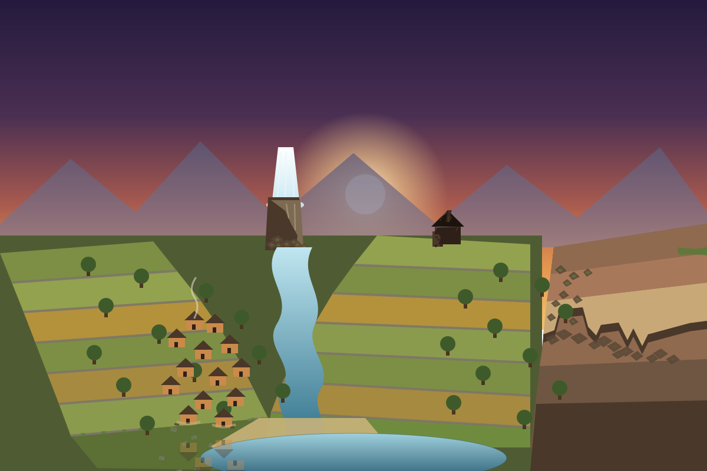

plot a4 — erosion
One landscape, weathered once an hour and never added to. Thirty-eight epochs so far — drag the scrubber or press play to watch what erode, silt, crack, flood, overgrow, and subside have done to one invented place.
